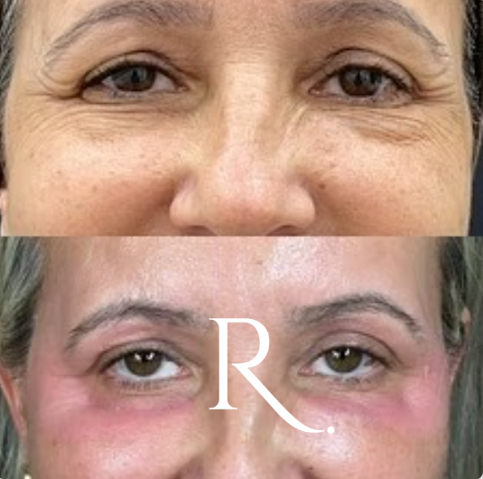
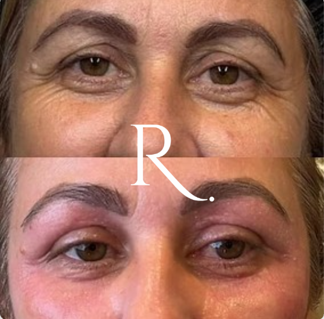
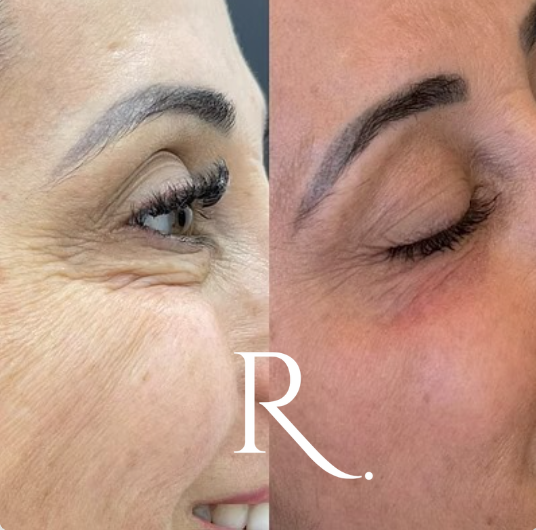
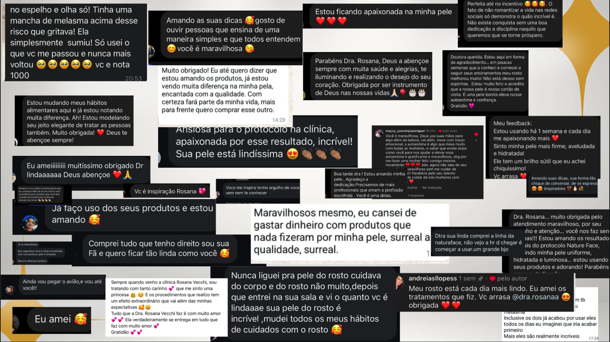
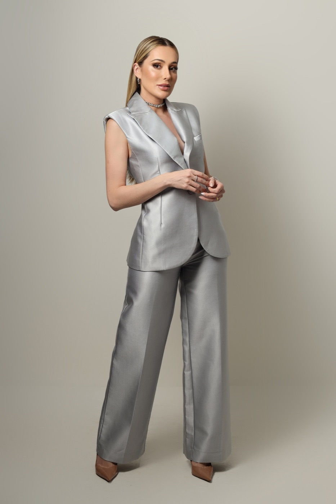
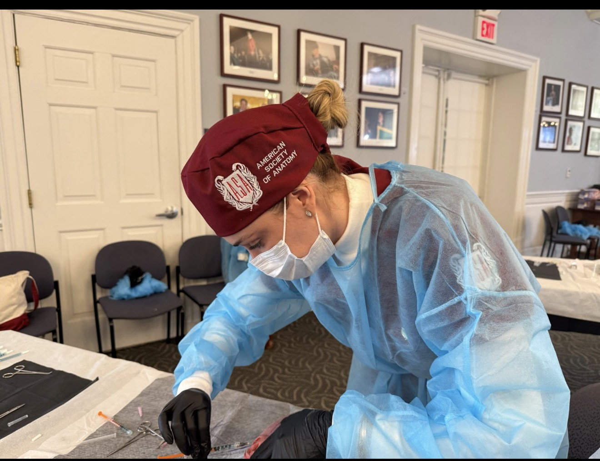

E você não tem o que responder.
Ela já tentou creme caro. Já fez procedimento que não entregou nada. Não quer cirurgia, tem medo do corte e do tempo parada.
Então ela agradece, levanta da sua cadeira e vai resolver com a profissional da esquina. Não porque a outra é melhor que você. Porque a outra sabe fazer uma coisa que você ainda não sabe.
Especialização Harvard · ASA e Anatomy · centenas de profissionais formadas
Você é boa. Estudou, faz curso todo ano, atende com carinho, entrega resultado. Isso não está em discussão.
Só que boa tem em cada esquina. O que não tem em cada esquina é diferencial.
Sem um, você continua sendo mais uma. Competindo por desconto, fazendo o que todo mundo faz, pelo ticket que todo mundo cobra.
E aí a rotina fica assim:
eu já estive exatamente aí
Ela já está procurando. Está com dinheiro na mão. E não é uma cliente difícil de convencer, porque ela convive com isso todo dia.
A única pergunta é quem vai atender essa mulher. Você, ou a outra.
A técnica de rejuvenescimento do olhar mais avançada, mais segura e mais lucrativa que existe hoje no mercado brasileiro.
Sem bisturi. Sem aparelho caro. Executada em 30 minutos de consultório, com resultado visível já na primeira sessão.



Em cada quadro, a foto de cima é o antes e a de baixo é o depois. São casos reais atendidos com o protocolo.
A cliente entra, senta, e em meia hora ela levanta e se reconhece no espelho. É esse o momento que faz ela indicar você pra três amigas.
QUERO APRENDER A TÉCNICA Ao vivo, direto com a Dra. Rosana.Procedimento premium, de ticket alto, que se paga em poucos atendimentos.
Você vira a profissional procurada justamente quando ninguém mais sabe resolver.
Sai da guerra de preço e passa a oferecer o que 95% não oferece.
Quem se olha no espelho e gosta do que vê não some. Ela volta, e traz as amigas.
Indicação, execução e pós procedimento sob protocolo. Você não improvisa nada.
Marca pessoal sólida, com método e nome próprio na sua região.
Não é print de aluna. É paciente e seguidora falando da pele delas. Eu deixo aqui porque é exatamente esse tipo de relação que a técnica constrói com quem senta na sua cadeira.

Mensagens reais de pacientes e seguidoras.

Fundadora do Blefaro Sem Cortes. Referência nacional em estética não cirúrgica e rejuvenescimento facial avançado. Construiu uma das marcas mais respeitadas do segmento e formou centenas de profissionais que hoje são autoridade nas suas regiões.
Justo. Deixa eu contar.
Eu também já fui a profissional que olhava pro espelho do consultório e se perguntava por que a colega estava cobrando o triplo do que eu cobrava pelo mesmo procedimento. A mesma técnica. O mesmo resultado. Três vezes o preço.
Estudei fora do Brasil. Harvard, ASA, Anatomy. E não foi por vaidade acadêmica, não. Foi pra encontrar uma resposta que aqui ninguém me dava.
Achei. Existe uma técnica que resolve o que cirurgia, creme e procedimento nenhum estavam resolvendo.
Hoje, à frente do protocolo NatureFace, eu ensino exatamente o que eu queria ter aprendido dez anos atrás. Pra você não perder uma década descobrindo sozinha o que pode te transformar em referência agora.
Rosana

Aula ao vivo de aproximadamente 2 horas, direto com a Dra. Rosana Vecchi Caldas.
Pagamento 100% seguro. Vaga confirmada por e-mail.
As vagas são limitadas de propósito, pra o encontro continuar sendo próximo e ter espaço real pra você perguntar ao vivo. Quando lotar, encerra.
Noventa e sete reais. É menos do que você cobra numa limpeza de pele, e é o que separa você de dominar um procedimento que a sua concorrência não sabe fazer.
Sim, a base é ter formação em estética. Mas não precisa dominar flacidez. A imersão começa do alicerce, anatomia da região periorbital e diagnóstico diferencial, e vai até a execução completa. Iniciante e experiente terminam no mesmo nível técnico.
Não. O protocolo foi desenhado pra usar material acessível, que já está na maioria dos consultórios. Nada de aparelho de R$ 80 a 400 mil.
Alta. Olhar caído é uma das três queixas estéticas que mais crescem no Brasil, e a maioria das clientes recusa cirurgia. Quem oferece a solução não cirúrgica colhe um mercado pouco disputado.
Fica gravada. Você tem acesso à gravação por 7 dias depois do encontro, então dá pra assistir no seu tempo. Mas se você puder estar ao vivo, esteja: o ao vivo é a única hora em que você tira as suas dúvidas comigo, e isso a gravação não devolve.
A decisão é técnica. E é sua.
P.S. Enquanto você lê isso, tem uma cliente sua sentada na cadeira de outra profissional, perguntando sobre o olhar caído dela. A diferença entre vocês duas custa noventa e sete reais e duas horas de um domingo de manhã.
P.S.2 A vaga é limitada porque o encontro é ao vivo e eu respondo pergunta por pergunta. Quando lotar, a próxima turma é só na frente.